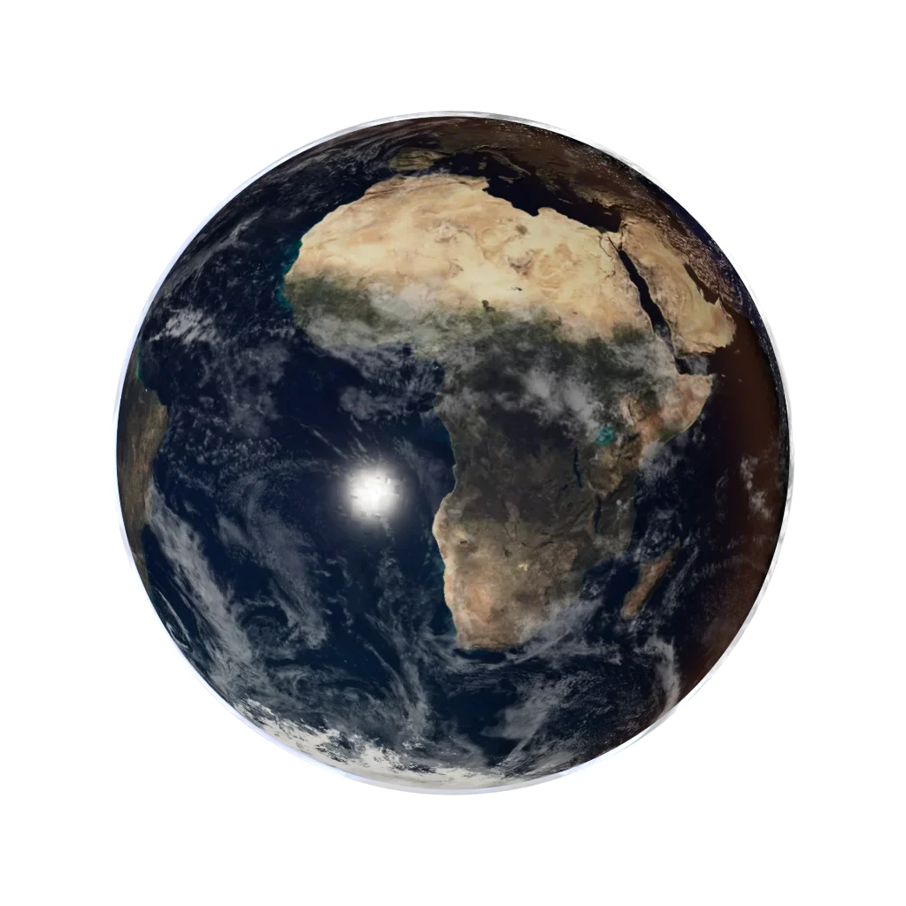

Five ways in
Follow your
curiosity.
The Observatory, your chart, the seven chapters, a sky card, and tonight. Other pages stay available if you already have the address.
01
3D Observatory
Turn a computed model of the solar system. Distances are schematic.
Enter the Observatory
The other four
Start with yourself, or look up.
- Birth chartPlanetary placements from your date, time and place, calculated on this device.
- The seven chaptersA deep reading in seven chapters, drawn from a completed birth chart. Symbolic, not a forecast.
- Sky cardA card you can keep or share from a chart on this device.
- TonightNaked-eye planets, the Moon and twilight for a place you choose.